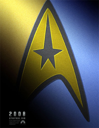
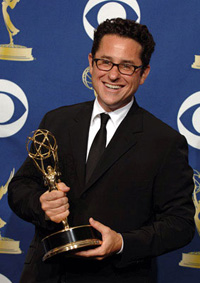
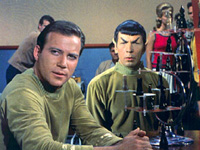
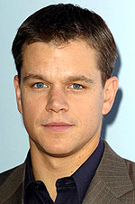

| por
Gustavo Leo
 Se voc daqueles trekkies que no abrem mo de visitar sites
como este e ficar sempre por dentro das notcias sobre Jornada nas Estrelas,
ento j deve estar a par do anncio de uma produo para 2008 de um novo filme
da serie, ou melhor, um reboot que pretende ignorar tudo o que j foi apresentado
no passado e seja um novo comeo para o futuro. Mas, como uma roubada dessas foi
acontecer? Seria mais um plano ardiloso de Rick Berman e seu ajudante Brannon
Braga? Se voc daqueles trekkies que no abrem mo de visitar sites
como este e ficar sempre por dentro das notcias sobre Jornada nas Estrelas,
ento j deve estar a par do anncio de uma produo para 2008 de um novo filme
da serie, ou melhor, um reboot que pretende ignorar tudo o que j foi apresentado
no passado e seja um novo comeo para o futuro. Mas, como uma roubada dessas foi
acontecer? Seria mais um plano ardiloso de Rick Berman e seu ajudante Brannon
Braga?
 Para
quem no sabe, a vai a nica notcia boa para o novo projeto: Berman, aps anos
de fracassos no estdio, produzindo bombas como Voyager, Enterprise,
Insurreio e Nmesis (ai, meu pobre Nmesis...), recebeu
um chute na bunda pela nova chefe do estdio, a gordinha Gail Berman, e sumiu
da face da Terra (aparentemente levando Brannon Braga com ele). Enquanto isso,
Gail, que no boba nem nada, logo foi procurar um substituto a altura para assumir
o cargo de Tio Rick.
Lembrando: pelo menos quando Berman estava produzindo seu Jornada XI, ele foi esperto em desenvolver
uma histria junto com o celebrado roteirista Erik Jendresen, em que um antepassado
de Kirk chamado Tiberius Kirk servia a bordo de uma nave estelar l NX-01 durante
a terrvel Guerra Romulana (e fui eu que revelei com exclusividade tais spoilers
para o TB em uma das minhas colunas anteriores.
No uma maravilha saber de tudo?). Pode no parecer a melhor idia que j saiu
da Paramount, (Berman, copiando George Lucas, estava planejando um trilogia de
filmes prequels da Guerra Clnicas... quer dizer... Romulanas) mas uma idia
muito superior concepo de fazer um remake da Série Clssica
com novos atores, o grande furo de Abrams. Em Hollywood, ao que parece, nada se
cria, tudo se copia. Eu, ctico como sempre, no gostei da novidade, ainda mais
depois do surgimento de tais boatos nos quais J.J. Abrams deseja contratar novos
atores para interpretarem Kirk e Spock. Desculpe, senhor Abrams, mas Shatner
Kirk e Nimoy Spock. A magia da Série Clássica no consegue
ser repetida com apenas novos efeitos especiais de ultima gerao. simples assim.
Pelo menos quando Berman estava produzindo seu Jornada XI, ele foi esperto
em ignorar tais reboots e mostrar uma histria que se adequava cronologia
e ao cnon da franquia a tal Guerra Romulana.  Berman,
ao que parece, est fora da Paramount. Como a escolha para seu substituto caiu
em J.J. Abrams, um nerd e produtor famoso pelas duas
sries de grande audincia que produz ("Alias"e "Lost"), muita
gente achou que Jornada havia sido salva. Foi a direo forte de Abrams
no filme da segunda maior franchise da Paramount, o ltimo filme da srie "Misso
Impossvel", que lhe rendeu seu cogitado papel de dono da nova fase de Jornada
nas Estrelas.
De resto, a comunidade trekkie parecia ctica, em completo
denial frente s notcias de um reboot total da franquia e de novos atores nos
papis que imortalizaram William Shatner e Leonard Nimoy (cruzes!). Mas
isso foi mudando, j que Abrams passou a dar inmeras entrevistas para acalmar
os trekkies de planto e foi lanado at um pster-teaser do filme, feito para
distribuio na Comic-Com, a maior conveno de quadrinhos nos Estados Unidos.
Logo que este chegou mo de inmeros fs e na internet, a sorte estava lanada.
O pster trazia uma imagem da insgnia de comando da USS Enterprise na Srie Clssica
(uma possvel aluso Enterprise original) e as cores dourado e azul sem dvida
uma citao aos uniformes clssicos de Kirk e Spock. Algum a ainda duvida que
ser um reboot? Mas vamos aos pontos negativos. De um ponto de vista de storyteling,
nada dramaticamente pode ser ganho visitando Kirk e Spock na sua juventude. Diferente
de James Bond, Tarzan ou Superman, todos criados na literatura e abertos a outras
interpretaes, Kirk e Spock apenas existem nas mentes das pessoas como William
Shatner e Leonard Nimoy Nem o melhor dos melhores dos atores no conseguiria
escapar da performance original de Shatner como Kirk. Por que tentar, ento?  Mas
as novidades no param por aí. Uma fonte confivel do site
TrekWeb (no qual sou co-editor) nos revelou que Jornada XI se
passaria durante a primeira misso de James T. Kirk como capito da USS Enterprise
NCC-1701, e mostraria a tripulao daquela poca: Spock, Dr Piper, Gary Mitchell,
e da por diante. Outros rumores dizem que o filme se passaria na Academia da
Frota Estelar, com Kirk e Spock adolescentes (um erro cronolgico, j que Kirk
e Spock no atenderam Academia juntos, j que quando Kirk era um calouro, Spock
j servia como um tenente na Enterprise sob o comando do Capito Christopher Pike.)
Qual a verdade? Faam suas apostas e continuem lendo este site!
 Para
complicar ainda mais o meio-de-campo, surgiu o rumor que Abrams havia escolhido
o bom ator Matt Damon para viver o jovem Kirk (o que ao que parece, de certa
forma confirma o rumor sobre a primeira misso de Kirk, ao julgar pela idade do
ator, j que Damon tem a mesma idade de William Shatner ao assumir o papel do
capito em 1966). Tanto Abrams como Damon esto quietos e no deram nenhuma entrevista
sobre o assunto. Desconfie. De qualquer forma, s no contratarem Ben Affleck
como Spock e eu acho que o meu estmago agenta.
Com a sada do editor-chefe do TrekWeb do site por motivos
familiares por algum tempo, coube a mim administrar o site nas ultimas semanas
e entre diversas tarefas, receber scoops de fontes confiveis do estdio,
e da por diante. Confesso que est sendo duro postar notcias sobre J.J. Abrams
e seu filme, j que tais notcias me causam um profundo aborrecimento quando as
leio. Santa depresso, Batman... O pior ver que isso verdade, realmente vai
acontecer que a lembrana da Série Clássica est para ser
maculada pela Paramount, sempre correndo em busca de uma grana fcil. Onde esta
o Leonard Nimoy quando a gente precisa dele? Como ltimo insulto, parece que teremos um update, tanto
nos uniformes dos personagem, como no design dos set da Série Clássica
mostrados no filme. O que quer dizer o seguinte: Jornada XI, alem de prequel,
tambm ser um reboot de propores inigualveis, assim como foi a "Galactica"
de Ron Moore. Eu at que entendo a posio dos produtores em no apresentar um
visual retr para o filme, seja o design da Enterprise ou os uniformes coloridos
da dcada de 60, mas tais coisas so cones no s de Jornada, mas tambm
da histria do cinema e televiso. Muitos, assim como eu, no vem com bons olhos
a questo de se atualizar algo que no precisa ser atualizado. Abrams diz que
respeitar o cnon e os fs, ao ser indagado por jornalistas de todas as partes
do mundo. Eu queria acreditar em voc, J.J., queria mesmo. Mas assim
est difcil. |